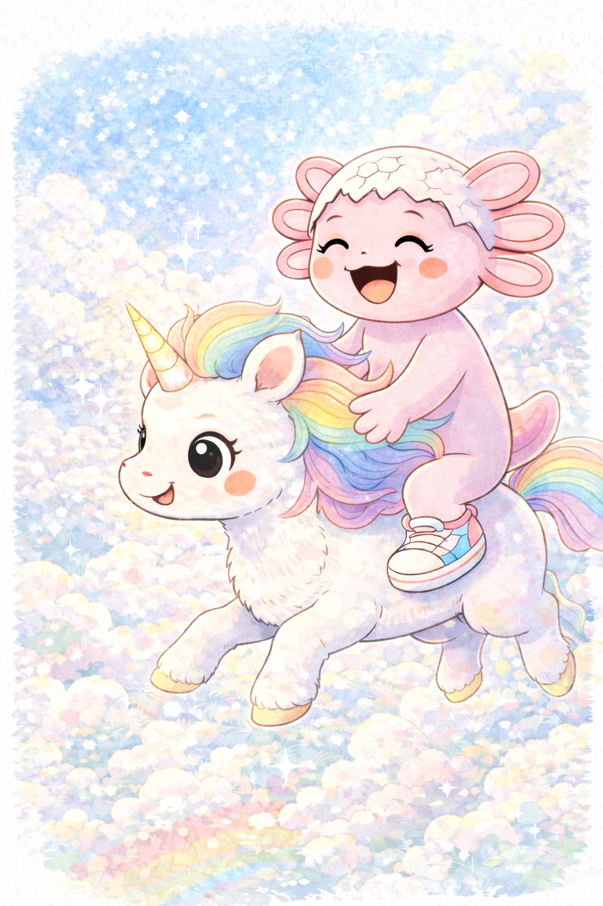
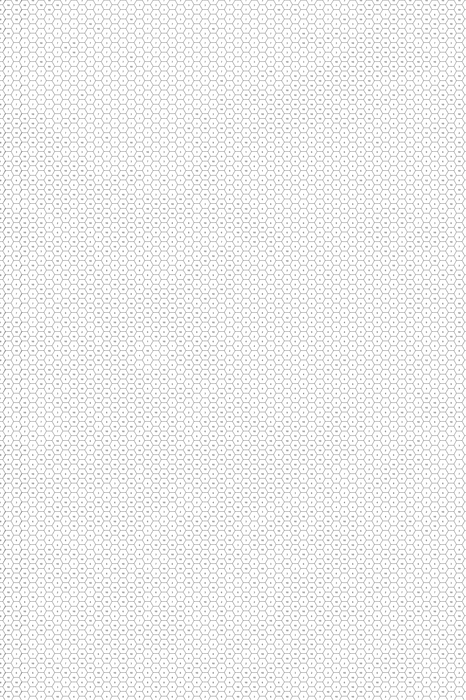
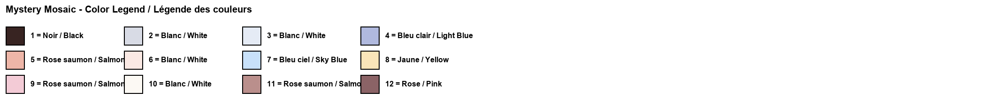
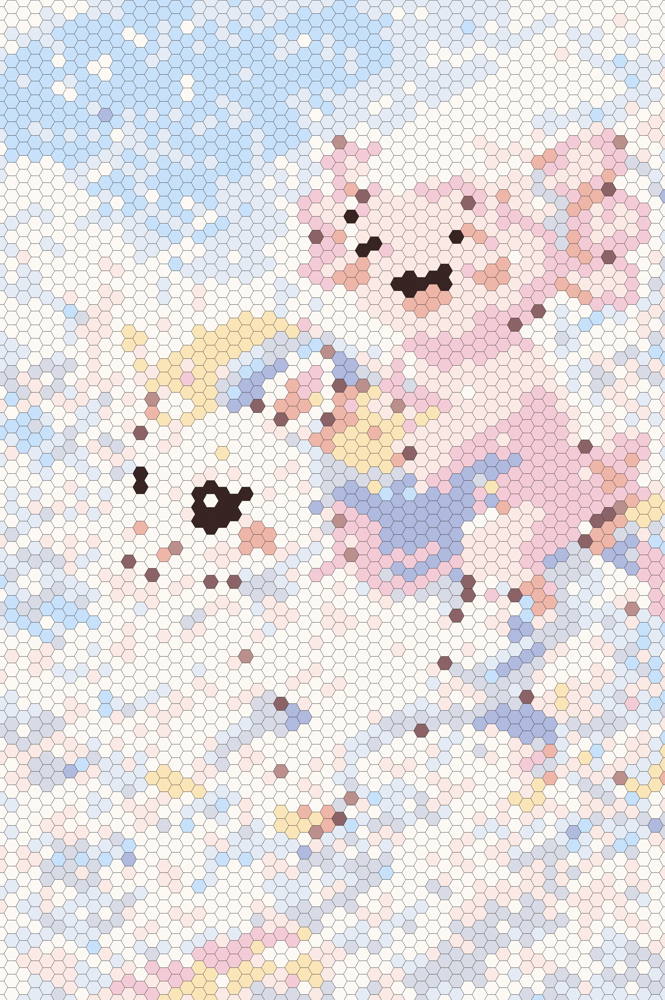

Original ImageImage originaleImagen original

Mystery Mosaic – Can you reveal the hidden image?Mosaïque mystère – Peux-tu révéler l'image cachée ?Mosaico misterioso – ¿Puedes revelar la imagen oculta?

Color LegendLégende des couleursLeyenda de colores

Answer Key (Spoiler!)Corrigé (Spoiler !)Clave de respuestas (¡Spoiler!)

Create Your Own Mystery Mosaic!Crée ta propre mosaïque mystère !¡Crea tu propio mosaico misterioso!
Upload any image and transform it into a printable mystery mosaic. Try 3 for free!Télécharge n'importe quelle image et transforme-la en mosaïque mystère imprimable. Essaie 3 gratuitement !Sube cualquier imagen y transfórmala en un mosaico misterioso imprimible. ¡Prueba 3 gratis!
🎨 Try the Mosaic Generator🎨 Essayer le Générateur🎨 Probar el GeneradorAbout This Unicorn Mystery Mosaic
This free printable unicorn mystery mosaic is a magical kids activity that combines the fun of color by number with the excitement of revealing a hidden picture. Each hexagon on the mosaic coloring page contains a number that corresponds to a specific color. As children fill in the numbered hexagons, a beautiful image of Coco the Axolotl riding a unicorn through rainbow clouds gradually appears!
Mystery mosaics are a wonderful way to keep kids engaged while developing fine motor skills, number recognition, and color awareness. This printable color by number page is perfect for children ages 3 to 8 and can be printed as many times as you like. Whether used at home, in the classroom, or during a birthday party, this unicorn coloring page is sure to delight.
Want more? Use our free mosaic generator to turn any image into your own custom mystery mosaic. Upload a photo of your pet, a favorite character, or any drawing and get a printable color by number page in seconds!
À propos de cette mosaïque mystère licorne
Cette mosaïque mystère licorne gratuite à imprimer est une activité magique pour enfants qui combine le plaisir du coloriage par numéros avec l'excitation de révéler une image cachée. Chaque hexagone de la page de coloriage mosaïque contient un numéro correspondant à une couleur spécifique. Au fur et à mesure que les enfants remplissent les hexagones numérotés, une magnifique image de Coco l'Axolotl chevauchant une licorne à travers les nuages arc-en-ciel apparaît progressivement !
Les mosaïques mystères sont un excellent moyen de garder les enfants engagés tout en développant la motricité fine, la reconnaissance des nombres et la perception des couleurs. Ce coloriage par numéros à imprimer est parfait pour les enfants de 3 à 8 ans et peut être imprimé autant de fois que vous le souhaitez. Que ce soit à la maison, en classe ou lors d'une fête d'anniversaire, cette page de coloriage licorne ravira à coup sûr.
Vous en voulez plus ? Utilisez notre générateur de mosaïques gratuit pour transformer n'importe quelle image en votre propre mosaïque mystère personnalisée !
Sobre este mosaico misterioso de unicornio
Este mosaico misterioso de unicornio gratuito para imprimir es una actividad mágica para niños que combina la diversión de colorear por números con la emoción de revelar una imagen oculta. Cada hexágono en la página para colorear contiene un número que corresponde a un color específico. A medida que los niños rellenan los hexágonos numerados, ¡una hermosa imagen de Coco el Axolotl cabalgando un unicornio a través de nubes arcoíris aparece gradualmente!
Los mosaicos misteriosos son una forma maravillosa de mantener a los niños ocupados mientras desarrollan habilidades motoras finas, reconocimiento de números y conciencia del color. Esta página de colorear por números para imprimir es perfecta para niños de 3 a 8 años y se puede imprimir tantas veces como desees. Ya sea en casa, en el aula o durante una fiesta de cumpleaños, esta página para colorear de unicornio seguramente encantará.
¿Quieres más? ¡Usa nuestro generador de mosaicos gratuito para convertir cualquier imagen en tu propio mosaico misterioso personalizado!
More Mystery MosaicsPlus de mosaïques mystèresMás mosaicos misteriosos